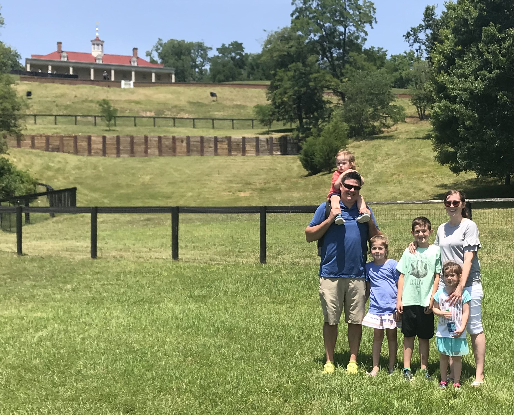

Missouri
My wife and I have been married for almost 11 years. We have 4 children ages 10, 7, 5, and 2. We like adventure and have lived in Utah twice, Arizona twice, Missouri twice and Kansas once since we have been married. We frequently joke that we are gypsies. Although, I think we are staying put for a while now that the kids are settled in school. We love hanging out together and are either playing games or watching movies when we aren't running to soccer or basketball games.
I served a mission in the Minneapolis Minnesota Mission. Our running joke was that many were cold but few were frozen, a little play on "many are called but few are chosen". Winters were the coldest cold I have ever experienced. Especially one of my areas on the shores of Lake Superior. I loved the people I served and served with. It was an amazing experience that has affected my life ever since.
My major is Applied Technology. This semester will cap off my computer support cluster and then I am looking to do the Front and Back end Web clusters.
I am hoping to go into web development. I am excited to learn how to do the actual development as more than likely I will just be customizing Wordpress themes. My wife is a food blogger and has been doing it for around 7 years now. Most of her fellow bloggers use the Wordpress framework so I would love to set up sites for bloggers. I worked for a web host for about a year as tech support and really enjoyed helping people fix their sites. And I have wanted to get back into that for a while. So I am extremely grateful for the Pathway program which has allowed for me to go back to school.
